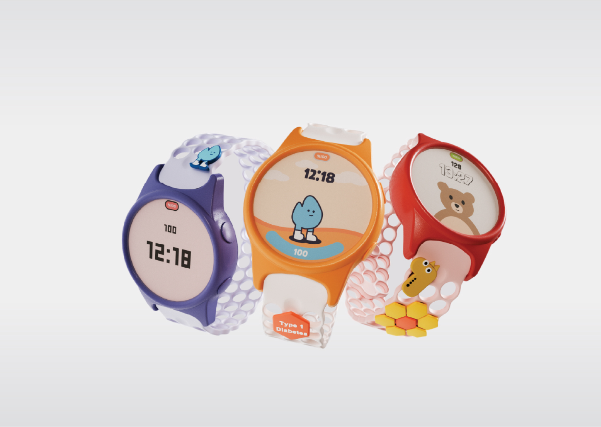

A needle-free glucose monitor for children — a wearable that eases the fear from daily diabetes management and grows with the child wearing it as a companion and a monitoring device.

Glucose monitoring for children often relies on devices and routines that can feel clinical, intrusive, and difficult to integrate into everyday life.
GlucoBuddy explores a more approachable alternative through the future promise of optical glucose sensing at the skin surface, enabling continuous, non-invasive monitoring. The design is built around wearability and familiarity, with a character-led interface, snap-fit accessories, interchangeable strap colours, and an e-ink screen designed for long battery life.
Every screen is built around the same idea: a character-led interface that turns glucose checks, meals, activity and emergency contact into something a child can navigate on their own, with friendly states and plain instructions rather than clinical readouts.
A short film walking through how GlucoBuddy is worn, read and used day to day.